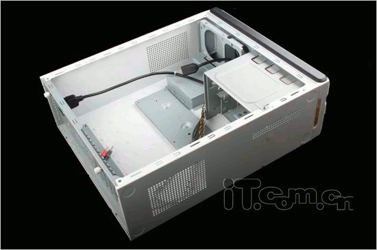

硬件基础教程
作者：TeliuTe 来源：基础教程网
主机是电脑的重要组成，包含了各个组件，下面我们来看一个练习；
1、机箱
1）机箱一般是长方形的，像一个长方形盒子，大多数是立式的，以前也有平躺着的卧式；

2）机箱前面是前面板，一般有电源按钮、复位按钮和耳麦插孔、USB 插槽；
3）电源按钮是一个大的圆按钮，上面有一个开关标志，复位按钮小一些，上面有一个圆箭头，
耳麦插孔中，绿色的是耳机插孔，红色的是麦克风插孔，USB 插槽里有一个挡板，如果正着插不进去，可以反过来试试；
2、机箱维护
1）机箱摆放要平稳，注意散热，避免潮湿，各个插头插座结实可靠，各个接线捆扎好不乱；
2）定期进行灰尘清理，从电脑桌中取出机箱时，要平稳用力均匀，
拔下各个连线插头前，先找个本子记一下特征和位置，手摸一下墙面释放静电；
3）固定螺丝一般在后面，用梅花起子卸下机箱右边的面板，向后拉出放好，用吹气球、打气筒或吹风机进行灰尘清理，
灰尘较多集中在风扇、电源和散热器上，吹的时候细心，别碰到里面的元件，可以用干净的小毛笔、牙签清除角落的灰尘蛛网；
4）清理完毕小心装好机箱盖，连接好各个插线，仔细检查一遍，然后就可以开机了；
本节学习了主机的基础知识，如果你成功地完成了练习，请继续学习下一课内容；
本教程由86团学校TeliuTe制作|著作权所有
基础教程网：http://teliute.org/
美丽的校园……
转载和引用本站内容，请保留版权信息和本站链接。